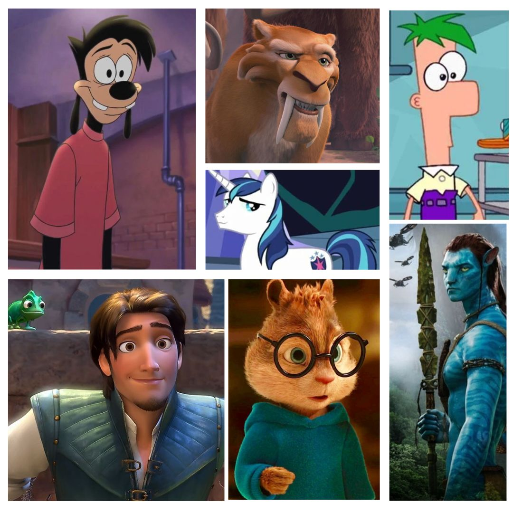

Más Populares


Hear me out !

La tendencia del "Hear Me Out Cake" en TikTok está volviendo a la repostería una forma inesperada de hablar de esos 'crushes' que todos tenemos, pero que a veces preferimos no confesar. En esta moda, los creadores de contenido decoran pasteles con figuras de sus “amores platónicos” poco convencionales: personajes de ficción, villanos, íconos de la cultura pop y hasta animales animados. Sin embargo, la verdad es que muchos de estos amores platónicos poco convencionales tienen bastante sentido pues remiten también a la forma de ser de los pérsonajes más que al ámbito sexual, aunque también remiten a este... Mejor vayamos por partes.
Empecemos por el ámbito sexual para quitárnoslo ya del camino, pues tiene menor importancia (véase el artículo: El female gaze ). Uno de los aspectos que más resalta a este nivel es la voz, muchos hear me outs resultan caóticos a la vista pero cuentan con voces muy atractivas, un famoso ejemplo: el Cepillo Colgate 360, sí, un cepillo de dientes que debido al doblaje que recibe en cierto anuncio, lo cual ha llegado incluso a ser noticia .Otros atributos quedan bastante sujetos a la subjetividad pero, algunos ejemplos son tanto los del artículo anteriormente citado como: personajes muy bien caracterizados. La caracterización, que si se pudiese traducir este fenómeno del arte al humano se podría tomar como: la personalidad. Lo cual remite de nuevo a la importancia de la actitud y las vibras que usted pueda transmitir.
Ahora, procedamos a lo importante, la actitud y las sensaciones que transmiten estos personajes que hacen que las mariposas reboloteen en los estómagos de algunas. Muchos de estos personajes son extremadamente inocentes, es más, muchos de ellos proceden de caricaturas o películas infantiles: personajes de animación, de Disney Channel, de ciertos animes... Mi interpretación al respecto es que muchas buscamos un hombre que de alguna forma sea políticamente correcto, otras de las facultadas que se aprecia en el hecho de que estos personajes sean producto de amores platónicos es que son graciosos ¡Que un hombre sea gracioso es un plus como ninguno! Algunos ejemplos son:
Dudas y Aclaraciones: Los Celos
He de advertir, que es muy importante que por mucho que su pareja o interés amoroso tenga hear me outs que no se parezcan a usted, no significa que usted valga menos o que ellas se sienta más atraída por ellos. Muchos de estos crushes suele tener su origen en la infancia. Y debo decir que, por experiencia propia, no se suelen parecer a aquellos hombres con los que acabamos teniendo relaciones amorosas. Por ejemplo, yo, de pequeña, siempre tuve una cierta inclinación por hombres altos, morenos y de ojos claros debido a que uno de mis príncipes Disney favoritos era Eric de La Sirenita. Sin embargo, a día de hoy, como ya he mencionado en anteriores ocasiones, mi pareja es un rubio de ojos azules que no es mucho más alto que yo. Además, una de las aspiraciones de muchas mujeres a nivel de relación es conseguir estar con un hombre que deposite confianza plena en ella. Una de las razones por las cuales esto tiene tanto interés es, en parte y desde mi opinión, el poder admitir que otra persona te parezca guapa y poder hablar de cuestiones por el estilo con tu pareja.
Aún así, sigue siendo crucial la confianza en una pareja. Las relaciones amorosas tienen tres pilares fundamentales: respeto, confianza y comunicación. Sin ellos, es más que evidente que de la situación no va a resultar una relación sana. Y sí, es natural sentir celos, son pocos los humanos que carecen de inseguridades, sin embargo, por tanto y en ese sentido, uno debe primeramente comunicar la situación a su pareja: "Oye, mira, yo soy una persona insegura y ..."; luego, se debe pensar entre juntos una solución con la que ambos estén cómodos, lo que no puede ocurrir es que se suba esa escalinata de los celos hasta el punto de que se prohiben ciertas relaciones sociales que no causan problema ninguno en la relación.
Por esto mismo, aunque sí, su pareja o usted deben poner de su parte para que el otro no esté en la misera, cada uno debe ser responsable de emociones que tienen su génesis en uno mismo y de ahí la importancia de la terapia. Una de las cosas que muchas mujeres también buscamos en una relación y que también tiene una importancia crucial en las relaciones a largo plazo es: responsabilidad y madurez emocional. Por tanto, mis queridos lectores, trabajen con sus emociones y traumas, si es posible en terapia, para así procesarlos y que estos no afecten negativamente sobre sus relaciones amorosas. Así pues ¡Mucha suerte!